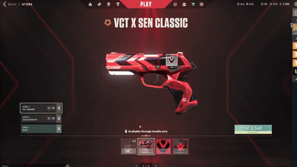
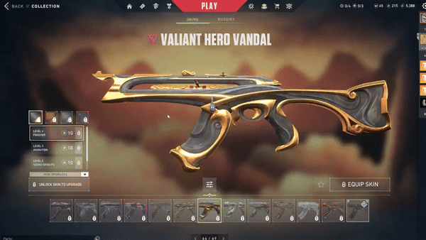
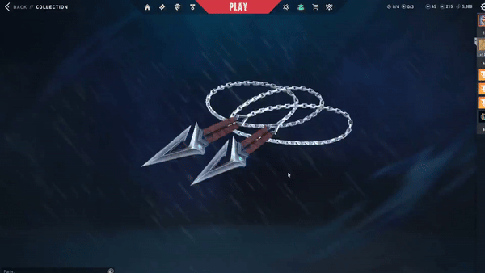

VALORANT
- Integration Artist- Help integrate art from our Premium Content team (Gun Skins, Sprays, Cards, Buddies, Etc.) to work in engine and ensure presentation and quality is appealing to players.
- Work in Blueprints to refactor skin logic to work correctly in the Collections screen for when our team wants to showcase features of our more Premium weapons. These refactors usually included the way material gets displayed, timing and usage of VFX, use of Timeline nodes to animate materials, vector math when needed to change transform of parts of the weapon, and ensure optimization with clean code.
- Experienced in pitching and creating debug tools, aswell exetending currently existing tools in which we interact with weapon skins and gunbuddies to assist with workflow speed and address new needs.
- Worked and collaborated with stakeholders involved, such as Marketing and our Art teams.
- Created documentation and workflows when introducing improvements and new ideas to how weapons get presented on the Collections page. Download.
VALORANT is a tactical shooter created by Riot Games, featuring a multitude of Agents that offer a variety of gameplay styles and as well multiple customization options to give player expression.
Project Responsibilities:
Released work highlights:

Each weapon skin when handed over to our team is always a unique problem to be solved on how we'd want to display it on the Collections page. This for example is the VCT Team Capsules we released in partnership with our Esport teams. This holographic effect was an inspect that can be viewed in game however it was oriented to be viewed at an angle that wasn't flat on it's side and didn't have a transition end effect to enter back into it's idle state. These 2 major changes I had to implement through Blueprints to fit in the context of the Collections screen.

Presentation is key to representing the higher end skin sets we offered, so picking out which animations (Inspect, Reload, Equip, ETC) and their associated VFX, material animations and so fourth were critical to displaying and highlighting the major effects the skins offer. For Valiant Hero, I really wanted to showcase the staff animation and mountain/clouds forming, this took some refactoring to work in the Collections page and present it the way we'd like to showcase the skins.

Taking into account different states and screens within our Collections page, it's important when setting up the Blueprints to check for the context the skin was in. Here for example, when viewing this skin on our Buddies screen, the Vandal's mountains and cloud effects would already be appearing and the animation won't play. This was a deliberate choice as to not make the effects play each time when switching to a different buddy.

Sometimes weapons, especially the melee would have models unique to the Collections screen that our team have to develop. Here the Kuronami melee, had no chain that can be viewed in 3rd person since the original intent of the weapon was to be viewed in 1st person. I collaborated with an artist to design a unique chain model for Collections screen, then set it up in Blueprints with this new model while ensuring materials and effects still worked correctly for it. Each weapon as you may notice has a pivot when you hold the mouse on the weapon and move around, which also is usually critical in our melee set up. I developed a pivot point debug tool so we'd know where the pivot is at visually in engine to help this workflow faster.